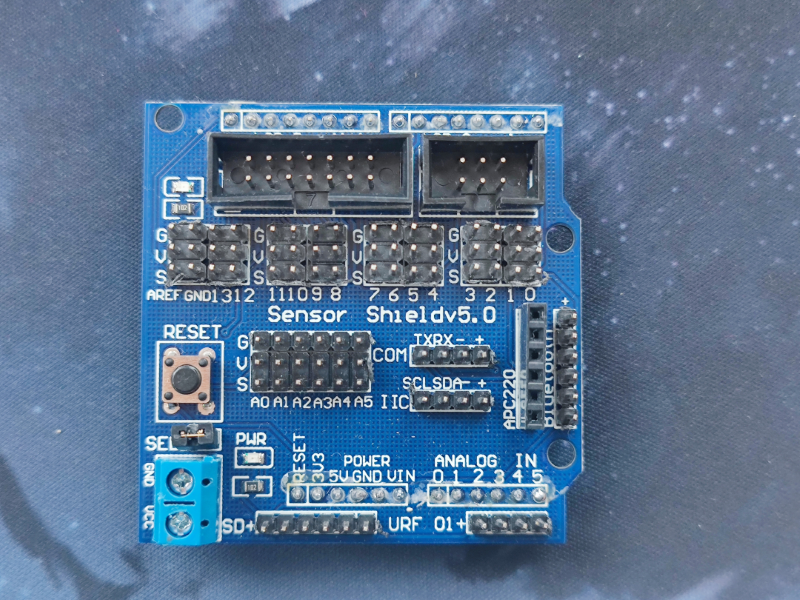
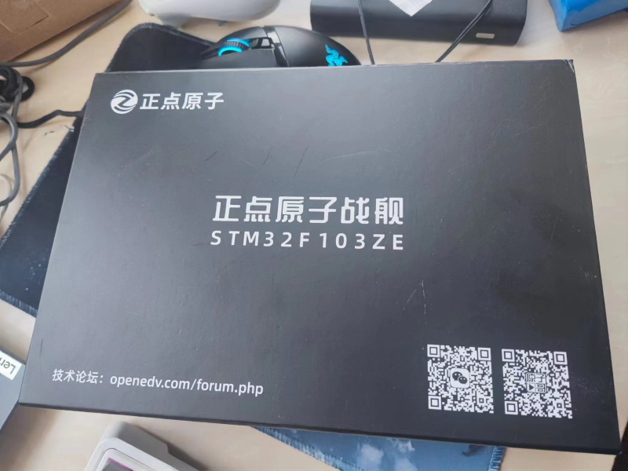
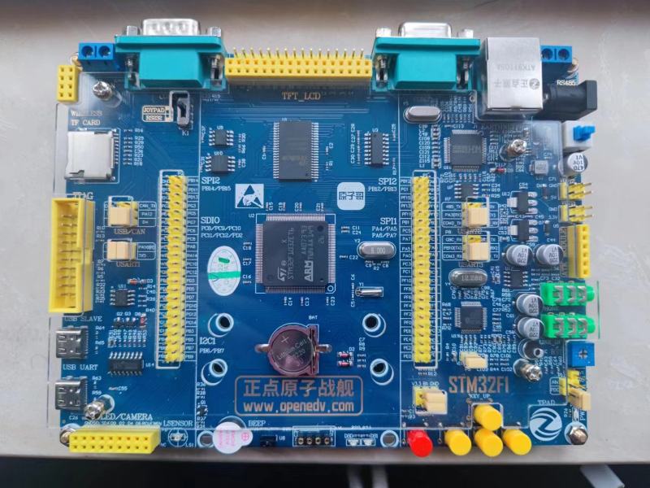
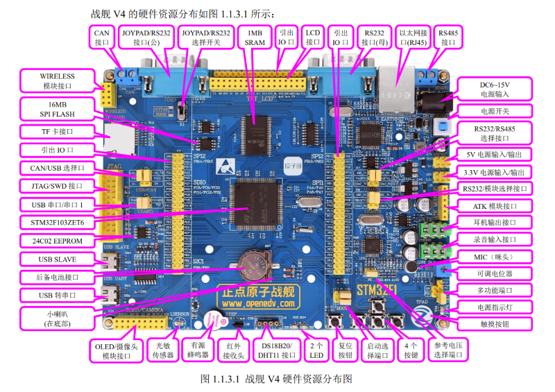

我与单片机的邂逅
我与单片机的邂逅
有时候，我自己会想，CPU的成本那么高，为什么那么多的智能设备的价格却是那么的便宜，到底是怎么去压缩这些产品的价格的；但是自己始终没有去深究过其中的技术，直到学校开始开设劳动教育课程，我选择了“避障小车的制作”这门课程，学校提供了Arduino单片机平台给我，借此我才开始正式接触单片机。
从Arduino开始入坑
Arduino到底是个啥？
喏，就长这样：

这是一个最为基础的Arduino UNO开发板，由于我们学校还是 比较穷的 经费紧张，再加上Arduino的作者将其在网上全部开源了，任何一家有设备条件的厂商甚至不需要任何授权就可以进行生产，于是我们学校采购了大量的三方生产的UNO板给学生使用
真的很想吐槽！！！！！
那个焊接的歪七八zhou的电子元件，真的让我一个强迫症患者十分的 着迷，我真的哭死。
回来，说正事，单纯一个UNO板其可使用的引脚接口十分少，少得可怜，为了适应更好的开发需求，Arduino对于UNO板开发了其配套的拓展板Sensor Shield v5.0：

通过拓展板我们可以实现更多的功能，其丰富接口让开发者的开发作品可适用于更多的场景。

其提供的接口包括于数字IO口，模拟IO口，LCD系列接口，无线通信接口，甚至蓝牙接口，同时他也为超声传感器单独给了超声传感接口，为了扩展存储的能力，他也具备一个SD卡接口。
当然，Arduino是一个很庞大的家族，UNO板只是一个非常基础的初学者开发板，在Arduino IDE中可以看见Arduino还有非常多的各种各样的型号，这里不再一一介绍啦。感兴趣的可以去Arduino官网或者Arduino的中文社区看看。
由于是第一次接触单片机，但是我还是有部分的C语言的功底的，勉强做出了四个轱辘能跑也可以避障的小车，但是学校给的传感器过于垃圾(开始推卸责任，但是说实话确实是传感器的问题)，循迹功能一直表现的不太好(捂脸)，具体制作的记录可见我的另一篇文章，自动避障小车的制作 - 小垃圾的后花园
从STM32开始投入大成本
自从开始从Arduino接触单片机后，发现，我作为一个物联网的学生，在未来岂不是需要大量的嵌入式开发咩？同时，借助制作避障小车的机会，结识了学校未来工程师协会的老师，老师建议我学习STM32，大量的嵌入式开发都会采用这一系列的芯片，这一方向刚好符合我的专业，决定开始学习STM32。
通过协会内的学长推荐，似乎正点原子的开发套件相关的学习资料比较多，所以我最终选择了正点原子的战舰V4开发套件进行入手学习。
讲真的，STM开发套件是真滴贵啊，花了我四百多大洋，你啊知道四百多大洋对一个穷学生意味着什么吗呜呜呜呜呜。。。。
但是不得不说，这个板子到货了之后是真的高级啊，黑色的外壳透着神秘气息…咳咳，上图：

里面的板子上下两层拿着光洁的亚克力板子保护，在接口处留有缝隙提供与外设进行连接，真的漂亮，STM32F1系列的芯片比Arduino不知大了多少，这个性能也不是一般的顶。

这张板子四周都是各种外设的接口，STM32F103ZET6这块芯片具备着144个引脚，其可连接外设的数量，已经到达让Arduino UNO板望而却步的地方了，性能也比Arduino UNO要强的太多了。
从官方给的开放文档可以看见，这些串口分贝代表着哪些

这块板子我觉得最近的一段时间完全足够我去折腾了，希望我很快做出一些实物，毕竟实践才是验证理论的唯一途径。